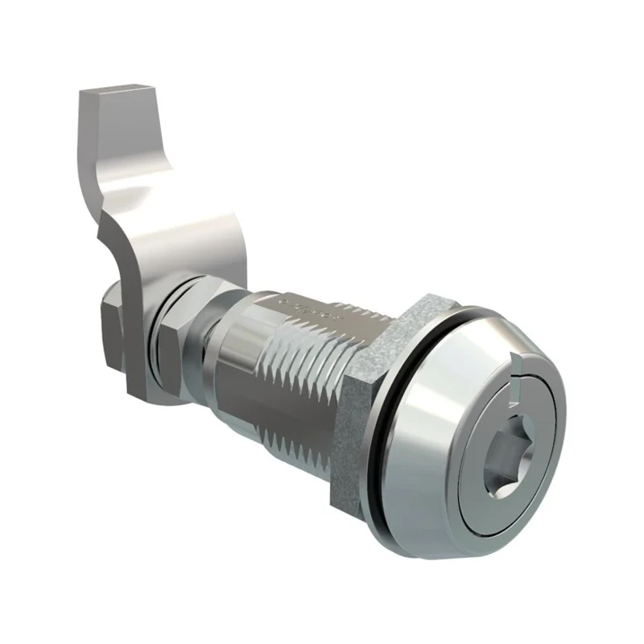

// ELECTRONIC HARDWARE
Latches and catches for equipment panels.
A replacement latch has to fit the door cutout and reach the frame or keeper. Webson sources compression latches, draw latches and catches by part number or drawing, including the mating hardware needed to complete the closure.
Request a latch quote →Pricing and availability confirmed with quotation.
Start with the closing action
On a small screen, scroll sideways to see the full table.
| Component | What it does | What to specify |
|---|---|---|
| Compression latches | Draw the panel toward the frame as the latch closes. | Grip range, cam configuration, compression travel and panel preparation. |
| Draw latches | Pull two mating points together using a latch and keeper. | Keeper location, mounting centers, reach and any required adjustment. |
| Cam latches | Rotate a cam behind a mating edge or keeper. | Cam length and offset, rotation, grip and clearance through the operating arc. |
| Push-to-close catches | Engage when the door or panel is pushed closed. | Mating catch geometry, alignment, release method and specified holding force. |
Fit the latch to the door and frame

Keep door thickness separate from grip. Grip describes the closing arrangement under the manufacturer’s measurement convention; it is not necessarily the thickness of one panel. Check the drawing for the selected body, cam or keeper combination.
On a small screen, scroll sideways to see the full table.
| Feature | Information to send | What to check |
|---|---|---|
| Panel preparation | Hole or cutout dimensions, mounting pattern and door thickness. | Match the complete cutout, including flats, notches and fastener holes. |
| Grip and mating position | Specified grip range and the location of the cam, frame edge or keeper. | Include relevant gasket and stack dimensions using the manufacturer’s definition. |
| Operating clearance | Space for the handle, tool, cam and latch movement. | Check both sides of the panel and the full opening or closing motion. |
| Access and locking | Hand or tool operation, key arrangement and any access restrictions. | A keyed version may have a different body or operating arrangement. |
| Material and environment | Material, finish and required sealing or corrosion performance. | Confirm any rating for the exact part and installed configuration. |
Describe the closure requirement
For a gasketed enclosure, send the gasket and closure requirements along with the latch details. A compression action alone does not establish an enclosure seal or environmental rating. For a replacement, include the full part number and any markings on the cam or keeper; changing only the visible handle can leave a mismatched assembly.
Service panels, cabinets and equipment enclosures
Frequent access, vibration, available hand clearance and access restrictions can call for different closing arrangements. Tell us how the panel is opened and secured. If a matching keeper, cam, key or mounting accessory is needed, include it in the same inquiry.
Before you order
Is grip the same as panel thickness?
No. Panel thickness describes the material where the latch mounts. Grip follows the latch manufacturer’s definition of the closing stack or mating geometry. Check both dimensions on the selected product drawing.
Does a compression latch make an enclosure watertight?
Not by itself. Sealing depends on the exact latch configuration, installation, gasket, panel and frame. Specify the enclosure requirement and confirm the applicable product ratings.
Can I replace a latch without changing the keeper?
Compare the mating geometry before doing so. A new latch may need a different keeper, cam offset or mounting position even when the visible body looks similar.
Can Webson quote Southco latches?
Yes. Browse the Southco pages or send the complete Southco part number, quantity and delivery requirement. Include mating accessories if the closure needs them.
Send the latch and mating-part details together
Include manufacturer part numbers, quantity and requested delivery date. For a drawing-based inquiry, send the panel cutout, thickness, grip or keeper geometry, operating style, material and finish. Add locking, sealing and documentation requirements where applicable.
Request a latch quote →Webson is an AS9120B and ISO 9001:2015 certified distributor. Include required certificates and traceability with your inquiry. View our certificate and quality scope.
Explore the Southco parts already listed
- Gaskets
- Precision screws and electronic fasteners
- Threaded inserts
- E3-16-21 compression latch
- C5-21-35 lever latch
- V4-0006-52 draw latch
- C3-805 grabber catch
These links open the existing part pages. Compare the published configuration to your requirement and request current pricing and availability.
Webson Fasteners · Serving customers since 1986 · Deer Park, New York